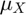
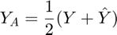

Increasing efficiency
Simple Monte Carlo uses IID samples to converge to an expected value. However, it is possible to best this method breaking the absolute independence of the samples. Nevertheless, there will still be a sense of independence. Samples will be close to independent.
Here, we present two different approaches can achieve the desired goal and propose an example in a financial setting. Some of these methods, however, can also decrease efficiency in some cases.
Contents
Standard
The simple Monte Carlo estimator for an arithmetic mean Asian call option is constructed next and we measure the use of resources. This will serve as baseline for alternative procedures.
inp.timeDim.timeVector = 1/52:1/52:3/26; % weekly monitoring for six weeks inp.assetParam.initPrice = 30; % initial stock price inp.assetParam.interest = 0.01; % risk-free interest rate inp.assetParam.volatility = 0.4; % volatility inp.payoffParam.strike = 30; % strike price inp.payoffParam.optType = {'amean'}; % looking at an arithmetic mean option inp.payoffParam.putCallType = {'call'}; % looking at a call option inp.priceParam.absTol = 0.1; % absolute tolerance of one dime inp.priceParam.relTol = 0; % zero relative tolerance AMeanCall = optPrice(inp); %construct an optPrice object [AMeanCallPrice,Aout] = genOptPrice(AMeanCall); disp(['The price of the Asian arithmetic mean call option is $' ... num2str(AMeanCallPrice,'%5.1f')]) disp([' and this took ' num2str(Aout.nPaths) ' paths and ' ... num2str(Aout.time) ' seconds'])
The price of the Asian arithmetic mean call option is $1.1 and this took 24174 paths and 0.01576 seconds
Control variates
If a random variable, , related to our estimate, , has known expectation (mean), , that knowledge can be used to guide the computation of the new expectation and reduce its variance. The resulting control variate sample will be
And its simple Monte Carlo estimate will have a variance of
where denotes correlation.
AsianEuro = optPayoff(AMeanCall); AsianEuro.payoffParam = ... struct('optType',{{'amean','euro'}}, ... % note two kinds of option payoffs 'putCallType', {{'call','call'}}) ; % this needs to have the same dimension [AsianEuroPrice, AEout] = meanMC_g(@(n) yOptPrice_cv(AsianEuro,n), ... inp.priceParam.absTol, inp.priceParam.relTol); disp(['The price of the Asian arithmetic mean call option is $' ... num2str(AsianEuroPrice,'%5.1f')]) disp([' and this took ' num2str(AEout.ntot) ' paths and ' ... num2str(AEout.time) ' seconds,']) disp([' which is ' num2str(AEout.ntot/Aout.nPaths) ... ' of the paths and ' num2str(AEout.time/Aout.time) ... ' of the time without control variates'])
The price of the Asian arithmetic mean call option is $1.1 and this took 15060 paths and 0.015268 seconds, which is 0.62298 of the paths and 0.96877 of the time without control variates
Antithetic variates
Sampling symmetrically from a distribution can, for asymmetric distributions, decrease the variance to zero. This method simply consists in, for every sample , generating an antithetic sample (where  is the cumulative distribution function of X). Every pair of samples generates an antithetic random sample
is the cumulative distribution function of X). Every pair of samples generates an antithetic random sample

And its simple Monte Carlo estimate will have a variance of
Note that for positive correlation , the variance increases.
[AMeanPriceAnti, AAntiout] = meanMC_g(@(n) yOptPrice_anti(AMeanCall,n), ... inp.priceParam.absTol, inp.priceParam.relTol); disp(['The price of the Asian arithmetic mean call option is $' ... num2str(AMeanPriceAnti,'%5.1f')]) disp([' and this took ' num2str(AAntiout.ntot) ' paths and ' ... num2str(AAntiout.time) ' seconds']) disp([' which is ' num2str(AAntiout.ntot/Aout.nPaths) ... ' of the paths and ' num2str(AAntiout.time/Aout.time) ... ' of the time without antithetic variates'])
The price of the Asian arithmetic mean call option is $1.0 and this took 14116 paths and 0.03236 seconds which is 0.58393 of the paths and 2.0533 of the time without antithetic variates
Author: Alejandro Madriñán Fernández